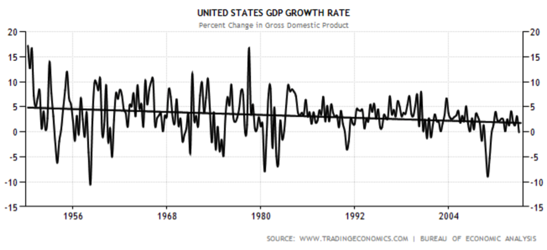
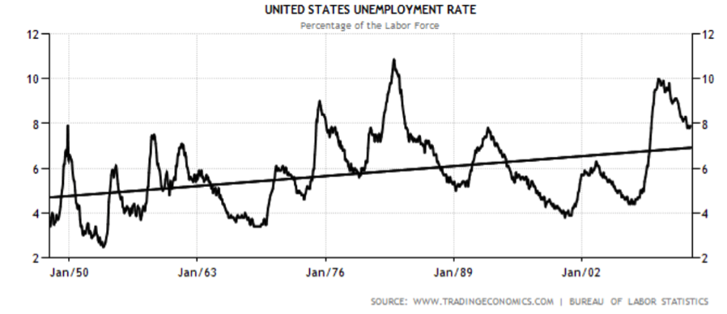
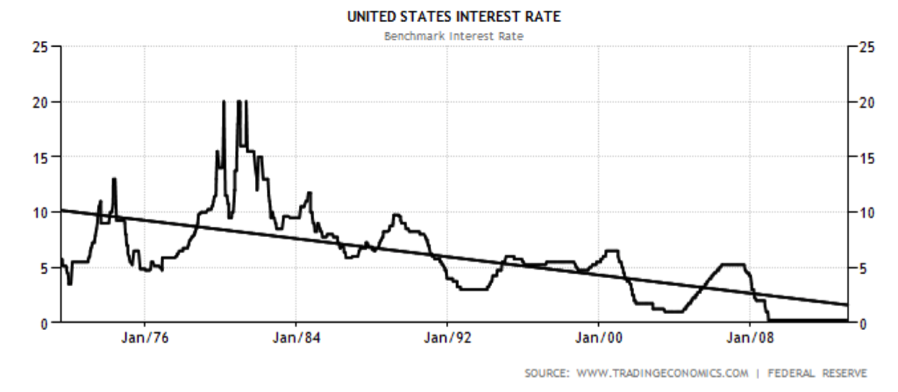

TL;DR Without economic growth, democracy doesn’t work because voters occupy a zero-sum system.
The first piece of startup wisdom I heard was “increasing your sales will fix all problems”. This turns out to be another way of phrasing Paul Graham’s point that growth is critical, which is true for all sorts of reasons—for example, justifying high valuations to raise large amounts of capital in the early days, attracting the best people and paying them with equity, providing a buffer to allow for some mistakes, and smoothing over internal tensions.
I believe that growth is not only critical for startups, but for most systems. Either you’re growing, or you’re slowly dying. Perfect equilibrium is rare.
One system that seems to be in early death throes is the United States government. There’s a lot of political rancor, which is particularly puzzling when one considers that in the 2012 presidential election, Obama and Romney said roughly the same thing. Dysfunction is high—the sequester, which was supposed to be so unpalatable it would never take effect, actually (and likely temporarily) happened last Friday because the parties couldn’t agree on an alternative. There’s a lot of arguing over insignificant issues—enough, in fact, to distract us from the fact that no one has new ideas on the big issues. We have trillion dollar deficits and no plan to reduce them, and yet the media focus on the sideshows.
A good metric for government dysfunction is inability to pass a budget, either leading to a government shutdown or a continuing resolution, which lets agencies continue to operate on the previous budget, for a theoretically short time period until we can agree on a new one. Passing a budget is a fundamental job of Congress and the President.
As far as I can tell, the US government managed to make it about 200 years without any shutdowns. We had one in 1976, and then a bunch more in the 70s and 80s, plus 3 in the 90s, including one that lasted 21 days. Shutdowns have fallen out of fashion, and now we just operate with continuing resolutions, and lots of them—for example, 21 for the 2001 budget alone. The real issue with shutdowns and continuing resolutions is the same—inability to agree on a federal budget.
Every few months, there’s brief discussion of some sort of grand bargain, but it always ends in deferral—even the deferrals get deferred! Everyone feels screwed, and almost no one feels like the government is doing a great job. We can’t agree on anything, and anyone that proposes doing something radically different doesn’t get elected.
But democracy (I’m using democracy to include republics and other forms of government where the people get an effectively direct say in who the leaders are) worked in the US for a long time—we were able to make real progress, pass budgets, be the world superpower, evolve as a country, etc. Something has changed.
The US has been blessed with economic growth for a very long time, first due to natural resources and massive amounts of land in which to expand, and then due to a period of technological progress rarely matched in human history that lasted approximately until we realized just how dangerous nuclear bombs really were and got scared of new technology. But the frontier is long over, and although technological innovation has continued at a blistering rate for computers and the Internet, it seems to have slowed down in most other industries.
Growth may be the root cause of American exceptionalism—things consistently got better every decade largely because we were growing. People from other countries wanted to live here, we led the world in technological innovation, social mobility was high because everyone was getting richer, and we had the resources to get involved around the world. This is still at least partially true.
But growth has slowed quite a bit. Here is a graph of real GDP percentage growth in the United States from 1950 until now, with a trendline. The trendline goes from just under 5% to just under 2%. This is a much more significant drop than it appears, because it compounds exponentially.

A shocking data point about how things are going is that the median real net worth for households headed by someone under 35 dropped 68% from 1984 to 2009, to $3,662. For those over 65, it increased 42% to $170,494 (largely due to a gain in property values). This disparity is good evidence of a lack of real growth (and also a very unstable situation where an older generation benefits at the expense of a younger).
Here are two more graphs, the first showing the US unemployment rate (the real numbers are perhaps worse, as people drop out of the work force) and the second showing the US interest rate, both of which make a case for slowing growth:


All of that said, in absolute sense I’d much rather live in the world of today than 1950—it’s tough for me to imagine living in a world without the Internet. However, in the same way that one can feel acceleration but not velocity, people seem more sensitive to the annual rate of improvement than the absolute quality of life. So even though people should be happier in an absolutely better world, no one wants to stand still on the hedonic treadmill.
Most of us want our lives to get better every year—the hedonic treadmill is a pain that way. In a democracy, we theoretically vote for what we believe will improve our lives the most. In a system with economic growth, things can improve for everyone. In a system without growth, or even one with very little growth, that’s not the case—if things improve for me, it has to come at the expense of things getting worse for you. Without growth, we’re voting against someone else’s interest as much as we’re voting for our own. This ends with lots of fighting and everyone feeling screwed, broken into factions, and unmotivated. Democracy does not work well in a zero-sum world. Autocratic political systems probably work better with growth too, but the effect of a lack of growth is likely less pronounced right up until the revolution.
So we need to get growth back, unless we want to see this grand experiment end. Our politicians don’t seem to have any good ideas about how to do this. Saying “I believe in America” and hoping that proof by vigorous assertion starts working is not a strategy.
I believe democracy only works in a non-zero-sum world. We are losing jobs that we will never get back, we are borrowing money and spending it on anything but real investment, and it feels like we are managing a slow decline. Without growth, we will head towards a special case of Malthusian dystopia where we have plenty of junk food but not enough of anything else.
Growth is what we should be focusing on. Growth is great—it lets us run deficits, it means the country is not zero-sum, it lets us invest in innovation and continual improvement in infrastructure, it provides a buffer for a little mismanagement, and it means tomorrow will be better than today. Contrary to what one might expect, growth provides long-term stability.
We must return to real growth, growth where we do more with less. Borrowing money to get ninety growth cents on the dollar does not count, although that may work for a while. We have to figure out how to fix the real problems with technological innovation—cheaper and cleaner energy, better healthcare (15.2% of GDP in 2008 and 18.2% of GDP in 2011), better transportation, food production, and defense. GDP growth is probably the only way to fix our national debt and entitlement problems, and it’d be better to have real growth than inflationary growth.
How to best drive economic growth is a difficult question. It’s easy to say we should just invest in science and technology, and although that’s probably right it’s easier said than done. The government is historically bad at picking winners to invest in, but our leaders can perhaps help reverse the cultural shift from pro-science to anti-science. Our current culture has shifted to be anti-science; the fear of things like genetically modified food and robots is obviously in the way of growth.
We should strive to make jobs in science and technology more appealing than jobs in finance (incidentally, it should be a big red flag for growth when the brightest young people start going into finance, since they aren’t actually creating any more wealth, just redistributing it). Startups are probably the best way to do this—startups let people that develop a new technology get rich, instead of just making GE slightly richer. So we should encourage startups in whatever way we can.
Another issue is the structure of our national budget. We have, in startup parlance, a high burn, and most of it can’t be considered ‘investment’ but is instead ‘expense’. Spending money on things like infrastructure improvement or new technology that are likely to generate more money in the future helps growth; spending money on the so-called entitlement programs, and parts of the military, does not. Of course medical care and defense are important, and we have to have them—this is a tough balancing act. In some cases, the competitive nature of the private sector may provide a better path. Sooner or later, we are going to have an ugly conversation about our national budget—we can delay it for a long time but not forever. The government, when it needs to spend money at all, should aim to invest. Considering what will drive growth is a useful framework for thinking about the best use of resources.
We should not fear innovation or globalization. Robots are going to replace human workers in lots of factories; jobs that do require human labor are going to continue to move to the lowest-cost place. But that’s ok, and these sorts of jobs are not what will generate economic growth for us anyway. We should strive to be a net exporter of ideas and technologies. For example, the US makes the best software in the world today. It’d be disastrous for us if that stopped happening. We should also design the best supersonic jet engines, the best nuclear power plants, and the best agricultural technology.
We should understand that as a consequence of technology and an economy of ideas, the gap between the rich and the poor will likely increase from its already high-seeming levels. There is good and bad to this, but we should be careful not to legislate against it, which will hurt growth. Technology magnifies differences in innate ability; startups provide a framework to get compensated for it. But GDP growth ought to improve the quality of life for everyone, and no growth will reduce quality of life for everyone except the very rich. A safety net for legitimately poor people is a good thing, and probably becomes more necessary in a world with this sort of divergence. Quality of life should improve for everyone; the bigger issue will likely be that people are very sensitive to relative fairness.
Pro-growth tax and legal changes are a good idea. As a consequence of a high burn rate, we have to have high taxes. But other countries don’t have this structural challenge, and so some other countries have lower tax rates than we do. That makes them an appealing place to start a business or live. By reducing our burn rate, we can reduce taxes. We don’t need to go crazy here—there are a lot of other factors that make the US a very attractive place to start a new company. But it would certainly help. And tax policy should reward activity that drives growth.
There are some easy legal changes we can make to increase growth. Immigration for entrepreneurs and skilled technology workers is an obvious one; we should want the best people creating value here, not elsewhere in the world. Tort reform is another—legal protection is of course important, but it’s gotten so silly that it discourages innovation.
There is a lot more we can do. Most of it is difficult, but growth it is the critical issue.
As a closing thought, the Airbnb founders used to draw a forward-looking growth graph that they wanted to hit. It was their number one priority; they put it up on their desks, on their refrigerator, and on the mirror in their bathroom. You build what you measure, and they built growth. That seemed to work pretty well for them.
It’s not as easy if you’re the US government. But probably not impossible, either, and it would at least point us in the right direction.
Thanks to Paul Graham, Nick Sivo, and Peter Thiel for contributing ideas that led to this blog post.